사진을 보고 느낀 점을 자유롭게 — 정답 없습니다.
여호와여 주께서 하신 일이 어찌 그리 많은지요 주께서 지혜로 그들을 다 지으셨으니 주께서 지으신 것들이 땅에 가득하니이다 (시편 104편 24절)
관찰 보도블록 경계석 위에 짙은 회색의 고양이 동상이 한쪽 팔을 기대고 비스듬히 앉아 있습니다. 동상 옆으로는 분홍색 꽃이 핀 화분이 놓여 있고, 뒤편 도로에는 주차된 자동차들과 나무들이 오후의 햇살을 받고 있습니다.
연결 바쁜 도시의 일상 속에서도 제자리를 지키며 여유를 즐기는 듯한 동상의 모습은, 온 세상 만물을 세밀하게 빚으시고 그 자리에 두신 창조주의 솜씨를 떠올리게 합니다. 우리가 무심코 지나치는 작은 존재들 안에도 하나님의 지혜가 가득 담겨 있다는 사실이 새삼스럽게 다가옵니다.
묵상 오늘 길을 걷다가 평소 눈여겨보지 않았던 작은 들꽃이나 길가에 핀 풀을 발견하면, 그 생명을 만드신 하나님께 감사의 기도를 올려보세요.
내가 산을 향하여 눈을 들리라 나의 도움이 어디서 올까 (시편 121편 1절)
관찰 눈 덮인 거대한 산봉우리 아래로 흰 구름 띠가 산허리를 가로질러 걸쳐 있습니다. 산 아래쪽에는 녹색 숲이 펼쳐져 있고, 가장 낮은 지점에는 작은 건물이 자리 잡고 있습니다.
연결 하늘 높이 솟은 산을 바라보면 우리가 감당하기 어려운 큰 문제 앞에서도 시선을 들어 더 높은 곳을 향하게 됩니다. 변함없이 그 자리를 지키는 산처럼, 우리 삶의 모든 순간을 굽어살피시는 분이 계시다는 사실이 든든한 힘이 되어 줍니다.
묵상 오늘 가장 고민되는 문제를 떠올리며, 그 문제보다 크신 하나님을 향해 시선을 돌리는 기도를 드려보세요.
하나님이여 사슴이 시냇물을 찾기에 갈급함 같이 내 영혼이 주를 찾기에 갈급하니이다 (시편 42편 1절)
관찰 거친 바위 사이로 하얀 물줄기가 쏟아져 내리고 있습니다. 젖은 바위 표면은 햇빛을 받아 황금빛을 띠고 있으며, 물은 아래쪽 웅덩이로 끊임없이 흘러 들어갑니다.
연결 메마른 땅을 적시는 물줄기를 보면 갈급한 마음이 자연스레 떠오르곤 하죠. 쉼 없이 흐르는 물이 바위를 적시듯, 우리 영혼도 그분을 향한 간절함으로 채워질 때 비로소 생기를 얻게 됩니다.
묵상 오늘 하루 중 가장 분주한 시간에 잠시 멈춰 서서, 메마른 내 영혼에 은혜를 구하는 짧은 기도를 드려보세요.
거기에는 크고 넓은 바다가 있고 그 속에는 생물 곧 크고 작은 동물들이 무수하니이다 (시편 104:25)
관찰 해변에는 수많은 조개껍데기가 흩어져 있고, 밀려온 파도가 하얀 거품을 일으키며 모래사장 위로 부서집니다. 하늘에는 짙은 보랏빛과 회색 구름이 넓게 펼쳐져 있으며, 멀리 작은 새 한 마리가 날고 있습니다.
연결 끝없이 펼쳐진 바다와 그 속에 가득한 생명들을 보면, 우리가 다 헤아릴 수 없는 크고 넓은 세상이 존재한다는 사실을 깨닫게 돼요. 작은 조개껍데기 하나부터 저 멀리 나는 새까지, 이 모든 것이 질서 있게 움직이는 풍경은 창조주의 솜씨를 떠올리게 합니다.
묵상 오늘 산책길이나 창밖을 보며 눈에 보이는 작은 피조물 하나를 관찰하고, 그 안에 담긴 하나님의 세밀한 손길을 인정하는 감사의 기도를 드려보세요.
친구는 사랑이 끊어지지 아니하고 형제는 위급한 때를 위하여 났느니라 (잠언 17장 17절)
관찰 검은색 수영복을 입은 두 사람이 나무 기둥에 기대어 서 있고, 한 사람의 손이 다른 사람의 어깨 위에 놓여 있습니다. 배경에는 푸른 바다가 펼쳐져 있으며, 밝은 햇살이 인물들의 피부와 의상을 환하게 비추고 있습니다.
연결 서로의 어깨에 손을 올린 모습에서 누군가 곁에 있다는 것만으로도 힘이 되는 관계를 떠올리게 됩니다. 기쁠 때나 어려울 때나 변함없이 곁을 지켜주는 친구의 존재는 우리 삶을 더욱 풍성하게 만들어 줍니다.
묵상 오늘 주변의 소중한 지인에게 연락하여 그동안 함께해 준 것에 대한 고마움을 표현하는 기도를 드리고, 따뜻한 안부 인사를 건네며 은혜를 나누어 보세요.
인생은 그 날이 풀과 같으며 그 영화가 들의 꽃과 같도다 (시편 103:15)
관찰 가느다란 풀들이 빽빽하게 솟아 있고, 그 끝에는 갈색 꽃이 달려 있습니다. 햇빛이 비스듬히 들어와 풀 줄기들이 밝은 금빛으로 빛나며 배경은 어두운 녹색으로 흐릿하게 처리되어 있습니다.
연결 들판의 풀은 금세 피었다가도 바람 한 번에 사라지곤 하죠. 우리네 인생도 이처럼 잠시 머물다 가는 존재라는 사실을 마주할 때, 도리어 오늘 하루가 얼마나 귀한 선물인지 깨닫게 됩니다.
묵상 오늘 만나는 사람들에게 따뜻한 말 한마디를 건네며, 우리에게 베풀어 주시는 하나님의 은혜를 기억하는 감사의 기도를 드려 보세요.
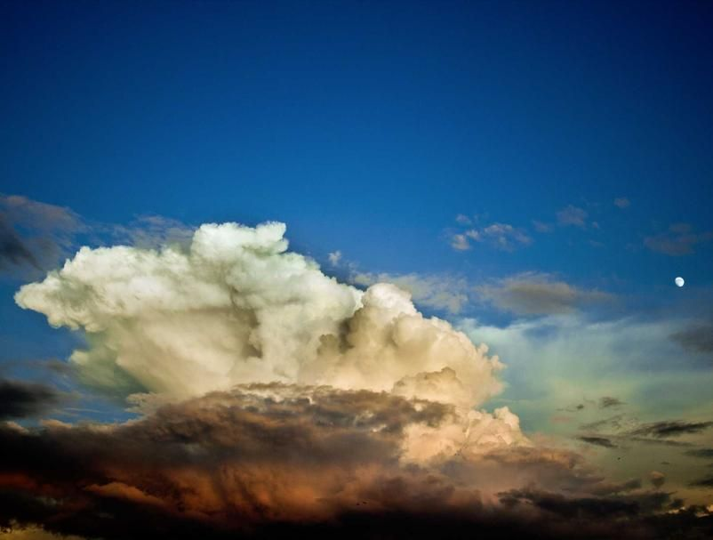
주의 손가락으로 만드신 주의 하늘과 주께서 베풀어 두신 달과 별들을 내가 보오니 (시편 8편 3절)
관찰 짙은 푸른색 하늘 한쪽에 작고 하얀 달이 떠 있고, 그 아래로 거대한 흰 구름 덩어리가 솟아 있습니다. 구름의 하단부는 어두운 갈색과 회색빛을 띠며 겹겹이 쌓여 있고, 상단부는 밝은 빛을 받아 하얗게 빛나고 있습니다.
연결 낮게 깔린 어두운 구름과 높이 떠 있는 달을 동시에 보고 있으면, 우리가 얼마나 작은 존재인지 실감하게 되죠. 하지만 그 광활한 하늘을 지으신 분이 우리를 기억하신다는 사실은 참으로 신비롭고 든든한 일입니다.
묵상 오늘 밤 창밖의 하늘을 바라보며, 나를 지으신 하나님의 솜씨를 찬양하는 짧은 기도를 드려보세요.
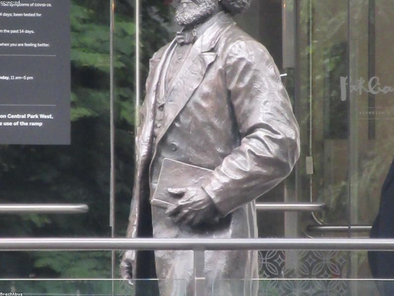
주의 말씀은 내 발에 등이요 내 길에 빛이니이다 (시편 119편 105절)
관찰 유리벽 너머로 짙은 회색의 동상이 한 손에 책을 들고 서 있습니다. 배경에는 초록색 식물들이 보이고, 유리 표면에는 하얀색 글씨가 적힌 안내판이 비치며 은은한 빛이 반사됩니다.
연결 손에 든 책을 묵묵히 지키고 있는 동상의 모습에서, 우리 삶의 방향을 비추는 등불 같은 존재를 떠올리게 됩니다. 어디로 가야 할지 막막할 때 우리 발걸음을 인도하는 빛이 곁에 있다는 사실이 든든하게 다가옵니다.
묵상 오늘 하루 중 성경책을 펼쳐 한 구절을 소리 내어 읽고, 그 말씀이 나의 일상을 비추는 은혜를 구하는 기도를 드려보세요.
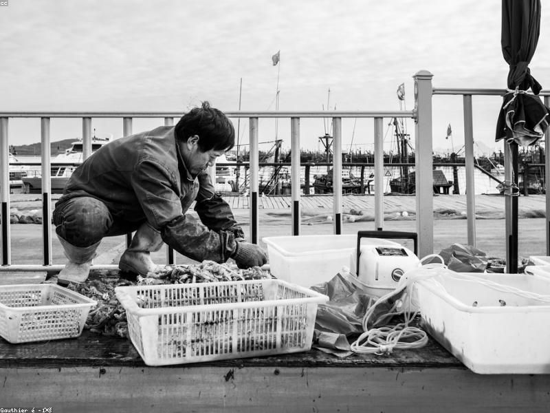
네가 네 손이 수고한 대로 먹을 것이라 네가 복되고 형통하리로다 (시편 128편 2절)
관찰 항구의 난간 옆에서 한 남성이 쪼그려 앉아 흰색 플라스틱 바구니에 담긴 수산물을 손으로 정리하고 있습니다. 주변에는 여러 척의 배가 정박해 있고, 흑백 톤의 사진 속에서 남성의 작업복과 장화가 거친 바닷바람을 견뎌온 시간을 보여줍니다.
연결 매일 반복되는 노동의 현장에서 땀 흘려 일하는 모습은 우리 삶의 성실함을 그대로 보여주죠. 그 수고가 헛되지 않고 열매를 맺게 하시겠다는 약속은 오늘 우리가 마주한 일터의 풍경을 더욱 의미 있게 만들어 줍니다.
묵상 오늘 내가 수행하는 업무나 가사 노동의 과정을 하나님께 정성껏 올려드리는 기도를 드려보세요.
푯대를 향하여 그리스도 예수 안에서 하나님이 위에서 부르신 부름의 상을 위하여 달려가노라 (빌립보서 3:14)
관찰 금속 와이어로 만들어진 거대한 스키어 조형물이 광장 중앙에 배치되어 있고, 그 뒤로 돌과 나무 소재의 다층 건물이 자리하고 있습니다. 맑은 하늘 아래 조형물 표면이 은색 빛을 반사하며 앞으로 빠르게 질주하는 자세를 취하고 있습니다.
연결 목표를 향해 몸을 잔뜩 웅크리고 속도를 내는 조형물의 모습이 앞을 향해 달려가는 우리의 경주와 닮았습니다. 때로는 멈추고 싶을 때도 있지만, 우리를 부르신 그곳을 향해 다시 시선을 고정하게 됩니다.
묵상 오늘 하루 내가 마주하는 일들 속에서 하나님께서 원하시는 방향이 어디인지 잠시 멈춰 질문하고, 그 응답에 따라 작은 순종을 실천해 봅니다.
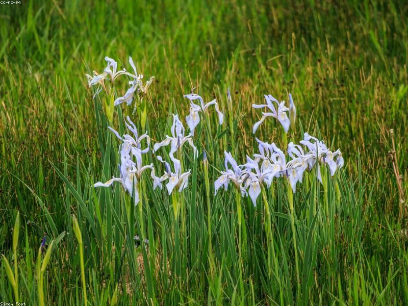
또 너희가 어찌 의복을 위하여 염려하느냐 들의 백합화가 어떻게 자라는가 생각하여 보라 수고도 아니하고 길쌈도 아니하느니라 (마태복음 6장 28절)
관찰 초록색 풀밭 사이로 연보라색 붓꽃들이 무리를 지어 피어 있습니다. 잎사귀들은 길쭉하게 뻗어 있고 꽃잎 끝은 햇빛을 받아 밝은 빛을 띠며 위를 향해 있습니다.
연결 들판에 핀 꽃이 저절로 자라나 아름다움을 뽐내는 모습을 보면, 애쓰지 않아도 우리 삶을 입히시는 분의 손길을 떠올리게 돼요. 화려한 옷감보다 더 정교하게 빚어진 자연을 보며 우리를 향한 세심한 돌봄을 생각하게 됩니다.
묵상 오늘 주변의 작은 꽃이나 풀을 유심히 관찰하며, 그 생명을 돌보시는 하나님께 감사의 기도를 드려보세요.
오직 여호와를 앙망하는 자는 새 힘을 얻으리니 독수리가 날개치며 올라감 같을 것이요 달음박질하여도 곤비하지 아니하겠고 걸어가도 피곤하지 아니하리로다 (이사야 40장 31절)
관찰 초록색 잔디밭 위에 갈색 깃털을 가진 매 한 마리가 내려앉아 있습니다. 매는 양 날개를 넓게 펼친 채 땅을 딛고 있으며, 주변은 흐린 빛 아래 균일한 녹색을 띠고 있습니다.
연결 드넓은 들판에서 날개를 펼치고 잠시 멈춰 선 매의 모습은, 바쁜 일상 속에서 잠시 숨을 고르며 다시 비상할 힘을 얻는 순간을 떠올리게 합니다. 우리도 때로는 멈춰 서서 하늘을 향한 소망을 품을 때, 새 힘을 얻어 다시 일어설 수 있습니다.
묵상 오늘 하루 중 잠시 시간을 내어, 내가 의지하고 있는 은혜가 무엇인지 생각하며 짧은 기도를 드려보세요.
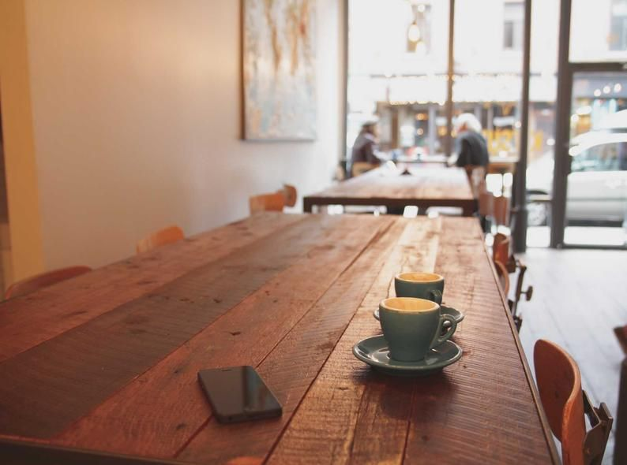
두세 사람이 내 이름으로 모인 곳에는 나도 그들 중에 있느니라 (마태복음 18:20)
관찰 긴 나무 테이블 위에 두 개의 커피잔과 검은색 스마트폰이 놓여 있고, 창가 너머로 흐릿한 거리의 풍경이 보입니다. 실내의 따뜻한 조명이 나무 결을 비추고 있으며, 멀리 떨어진 테이블에는 사람들이 앉아 있습니다.
연결 누군가와 마주 앉아 나누는 대화는 일상을 풍성하게 채워주곤 하죠. 두세 사람이 모인 곳에 함께하시겠다는 약속은, 우리가 소중한 이와 함께하는 이 시간에도 그분이 곁에 계심을 일깨워 줍니다.
묵상 오늘 누군가와 함께 차를 마시거나 대화를 나눌 때, 그 자리에 임하신 은혜를 기억하며 대화의 끝에 상대방을 위한 짧은 기도를 덧붙여 보세요.
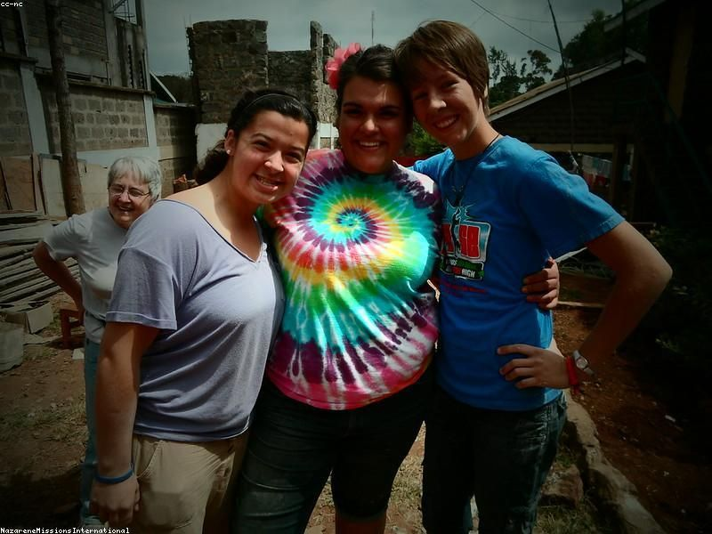
어느 때나 하나님을 본 사람이 없으되 만일 우리가 서로 사랑하면 하나님이 우리 안에 거하시고 그의 사랑이 우리 안에 온전히 이루어지느니라 (요한일서 4장 12절)
관찰 세 명의 사람이 야외에서 서로 어깨를 감싸거나 가까이 서서 카메라를 향해 웃고 있습니다. 중앙에 있는 사람은 무지개색 소용돌이 무늬 티셔츠를 입고 있으며, 뒤편에는 회색 머리의 여성이 서 있고 햇빛이 인물들의 얼굴을 비추고 있습니다.
연결 함께 어깨를 맞대고 웃는 모습에서 누군가와 마음을 나누는 기쁨이 전해집니다. 우리가 서로를 사랑할 때 보이지 않는 그분이 우리 안에 거하신다는 약속은, 이처럼 환하게 웃는 얼굴들 사이에서 더욱 선명하게 드러납니다.
묵상 오늘 주변의 소중한 사람에게 먼저 다가가 따뜻한 안부를 묻고, 그 사람을 위해 짧은 기도를 드리는 시간을 가져보면 좋겠습니다.
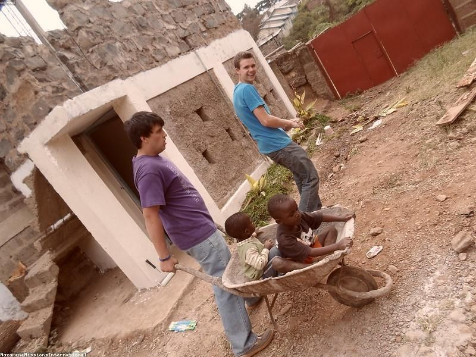
임금이 대답하여 이르시되 내가 진실로 너희에게 이르노니 너희가 여기 내 형제 중에 지극히 작은 자 하나에게 한 것이 곧 내게 한 것이니라 하시고 (마태복음 25:40)
관찰 보라색과 파란색 티셔츠를 입은 두 청년이 흙바닥 위에서 외발 손수레를 밀고 있고, 그 안에는 두 명의 어린아이가 앉아 있습니다. 배경에는 돌과 시멘트로 지어진 미완성 건물과 붉은색 철제 울타리가 보이며, 밝은 햇살이 현장을 비추고 있습니다.
연결 누군가를 위해 기꺼이 손수레를 밀어주는 모습에서, 작고 소외된 이들을 향한 사랑이 곧 그분을 향한 사랑이라는 사실을 떠올리게 됩니다. 거창한 일이 아니더라도 곁에 있는 사람을 위해 작은 수고를 더하는 순간이 바로 그분을 만나는 통로가 되어 줍니다.
묵상 주변 사람 중 도움이 필요한 한 사람을 찾아가 그에게 필요한 작은 도움을 직접 실천하며, 그 과정에서 그리스도의 사랑을 구하는 기도를 드려 보세요.
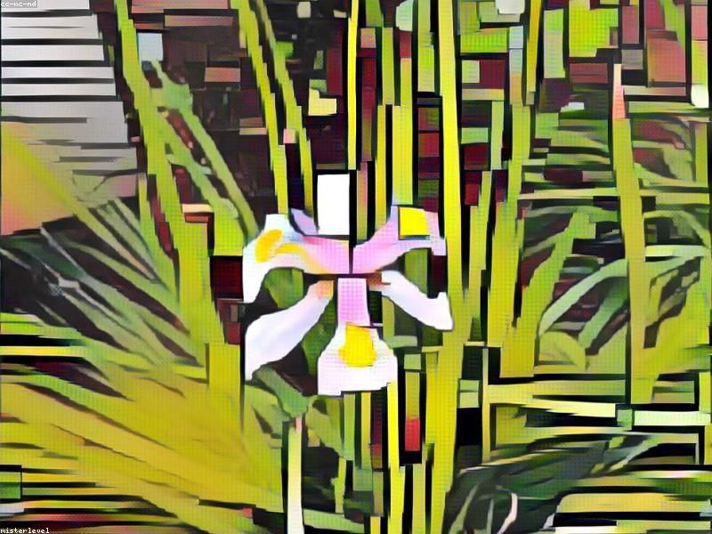
또 너희가 어찌 의복을 위하여 염려하느냐 들의 백합화가 어떻게 자라는가 생각하여 보라 수고도 아니하고 길쌈도 아니하느니라 (마태복음 6:28)
관찰 연두색과 노란색의 수직적인 풀잎들 사이로 흰색과 분홍색이 섞인 꽃 한 송이가 피어 있습니다. 꽃잎 중앙에는 노란색 점이 찍혀 있고, 전체적으로 기하학적인 패턴이 겹쳐진 형태를 띠고 있습니다.
연결 들판에 핀 이름 모를 꽃도 정성껏 입히시는 분의 손길을 생각하면, 복잡한 일상 속에서도 우리가 얼마나 귀한 존재인지 다시금 깨닫게 됩니다. 화려하게 꾸미지 않아도 그 자체로 충분히 아름다운 꽃처럼, 우리 또한 그분의 시선 안에서 이미 소중하다는 사실을 기억해 보세요.
묵상 오늘 하루, 거울을 보며 하나님께서 나를 만드셨음을 고백하고, 나에게 주어진 일상의 작은 일들을 성실히 수행하는 기도를 드려보세요.
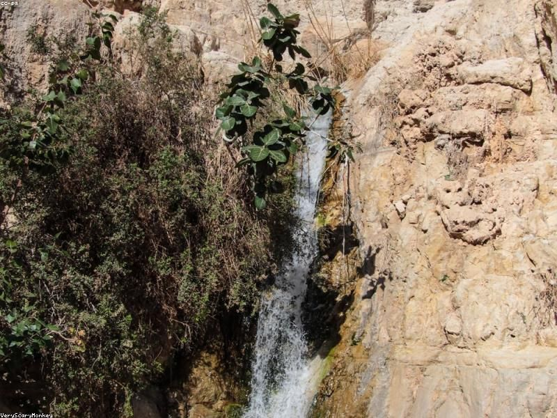
하나님이여 사슴이 시냇물을 찾기에 갈급함 같이 내 영혼이 주를 찾기에 갈급하니이다 (시편 42편 1절)
관찰 거친 황토색 바위 절벽 사이로 가느다란 물줄기가 흘러내리고 있습니다. 물줄기 옆에는 짙은 녹색 잎을 가진 나무가 자라나 있고, 강한 햇빛이 바위 표면을 밝게 비추고 있습니다.
연결 메마른 바위 틈에서도 생명을 유지하게 하는 물줄기를 보면, 갈급한 마음을 채우시는 분을 찾게 됩니다. 척박한 환경 속에서도 쉼 없이 흐르는 물처럼 우리 영혼도 그분을 향한 간절함으로 채워질 때 비로소 생명력을 얻게 됩니다.
묵상 오늘 하루 중 가장 메마르고 지친 순간에 잠시 멈추어, 하나님께 나의 갈급함을 솔직하게 고백하는 짧은 기도를 드려보세요.
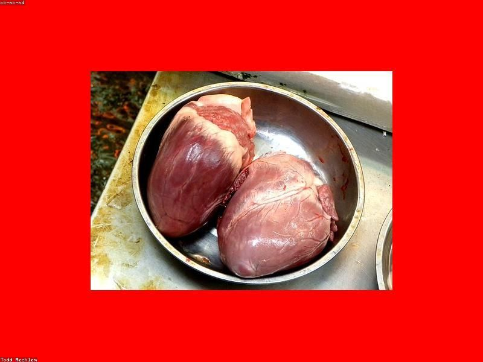
또 새 영을 너희 속에 두고 새 마음을 너희에게 주되 너희 육신에서 굳은 마음을 제거하고 부드러운 마음을 줄 것이며 (에스겔 36:26)
관찰 스테인리스 그릇 안에 붉은 빛을 띠는 심장 두 개가 나란히 놓여 있습니다. 금속 표면은 밝은 조명을 반사하고 있고, 심장 조직의 근육 결이 선명하게 드러나 있습니다.
연결 딱딱하게 굳어버린 마음을 부드러운 살처럼 바꾸시겠다는 약속은, 생명력을 잃고 멈춰버린 심장을 보며 우리 내면의 상태를 돌아보게 합니다. 겉모습은 그대로일지라도 그 안을 채우는 본질이 새로워져야 함을 이 사진이 일깨워 줍니다.
묵상 오늘 하루, 내 안에 딱딱하게 굳어 있는 고집이나 미움이 있는지 살피고 그 부분을 하나님 앞에 정직하게 고백하며 부드러운 마음을 구하는 기도를 드려보세요.
주의 말씀은 내 발에 등이요 내 길에 빛이니이다 (시편 119:105)
관찰 격자무늬 유리창 위로 두 개의 굵은 검은색 프레임이 대각선으로 교차하고 있습니다. 밝은 황금빛 조명이 격자 사이를 통과하며 전체 화면을 균일하게 비추고 있습니다.
연결 수많은 격자가 촘촘하게 이어져 길을 만드는 모습이 마치 한 걸음씩 내딛는 우리의 일상과 닮아 있습니다. 보이지 않는 곳까지 환하게 비추는 빛처럼, 매일의 선택 앞에 서 있을 때 우리 발걸음을 안내하는 등불이 있다는 사실은 큰 힘이 됩니다.
묵상 오늘 하루 내가 걷는 모든 경로를 떠올리며, 그 길 위에 비추시는 하나님의 빛을 의지하는 기도를 드려보세요.
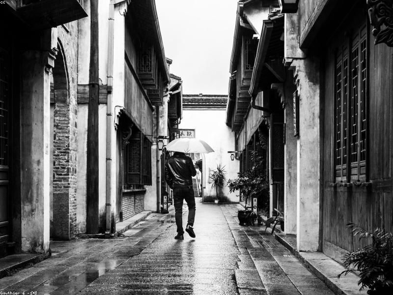
주의 말씀은 내 발에 등이요 내 길에 빛이니이다 (시편 119:105)
관찰 좁은 골목길 양옆으로 낡은 목조 건물들이 늘어서 있고, 바닥의 돌판은 비에 젖어 희미한 빛을 반사하고 있습니다. 우산을 쓴 한 사람이 길 끝을 향해 홀로 걸어가고 있으며, 전체적으로 흑백의 명암이 뚜렷하게 드러납니다.
연결 어디로 가야 할지 막막한 길 위에서도 발걸음을 비추는 빛이 있다면 든든하죠. 혼자 걷는 듯한 골목길이지만, 우리의 매 걸음을 인도하시는 분이 계시다는 사실이 큰 힘이 됩니다.
묵상 오늘 내가 걷는 일상의 경로를 떠올리며, 그 길 위에서 하나님의 인도하심을 구하는 짧은 기도를 드려보세요.
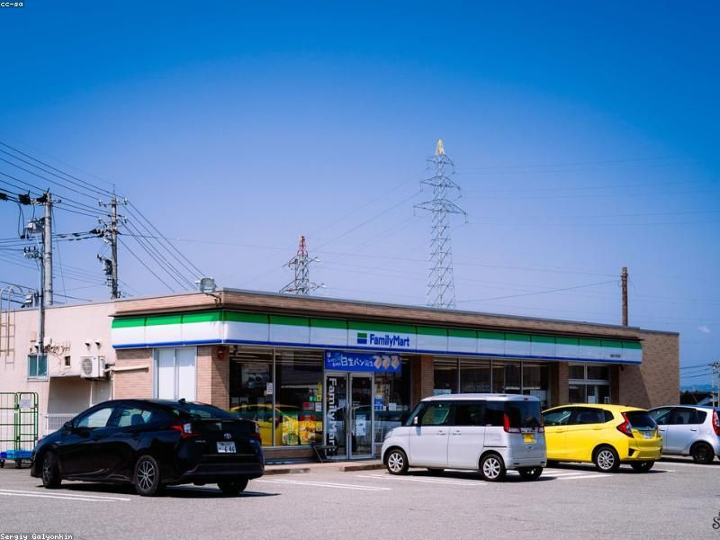
여호와께서 너의 출입을 지금부터 영원까지 지키시리로다 (시편 121편 8절)
관찰 편의점 주차장에 검은색, 흰색, 노란색 승용차들이 주차되어 있고, 건물 위로 파란 하늘이 넓게 펼쳐져 있습니다. 전신주와 송전탑이 건물 뒤편으로 뻗어 있으며, 강한 햇빛이 지면을 비추어 그림자가 선명하게 드리워져 있습니다.
연결 분주한 일상 속에서 잠시 들르는 편의점처럼, 우리는 매일 수많은 길을 오가며 살아갑니다. 어디를 가든 우리의 모든 출입을 지키시는 분이 계시다는 사실은, 낯선 길 위에서도 든든한 동행이 되어 줍니다.
묵상 오늘 이동하는 모든 경로에서 하나님께 짧은 기도를 드려보세요. 지금 향하는 곳이 어디든 그곳에 이미 함께하시는 분을 의식하며 감사의 인사를 건네는 시간을 가져보면 좋겠습니다.
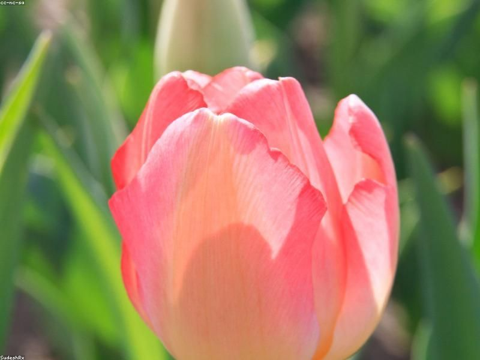
그러나 내가 너희에게 말하노니 솔로몬의 모든 영광으로도 입은 것이 이 꽃 하나만 같지 못하였느니라 (마태복음 6:29)
관찰 연분홍빛 튤립 한 송이가 초록색 잎사귀들 사이에서 위를 향해 피어 있습니다. 강한 햇살이 꽃잎을 투과하며 꽃의 가장자리를 밝게 비추고 있습니다.
연결 화려하게 꾸민 솔로몬의 옷보다 자연이 입은 꽃의 색깔이 더 아름답다는 사실은, 우리가 애써 무언가를 더하지 않아도 이미 충분히 귀한 존재라는 것을 알려줍니다.
묵상 오늘 거울을 보며 하나님이 지으신 내 모습 그대로를 인정하고, 감사하다는 고백을 담은 기도를 드려보세요.
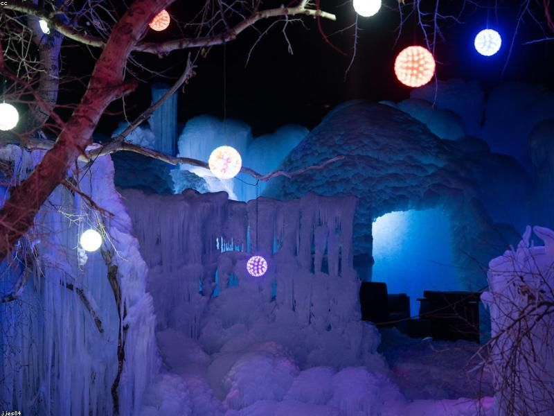
너희는 세상의 빛이라 산 위에 있는 동네가 숨겨지지 못할 것이요 (마태복음 5:14)
관찰 앙상한 나뭇가지와 거대한 얼음 기둥들이 뒤섞인 공간에 붉은색, 푸른색, 흰색의 구형 조명들이 매달려 있습니다. 어두운 배경 속에서 조명들이 밝은 빛을 내뿜으며 얼음 표면에 반사되고 있습니다.
연결 어둠이 짙게 깔린 차가운 얼음 세상 속에서도 조명들은 각자의 빛을 잃지 않고 공간을 밝히고 있어요. 우리도 세상이라는 차가운 현실 속에서 어떻게 빛을 발하며 살아가야 할지 생각하게 됩니다.
묵상 오늘 내가 머무는 일터나 가정에서 그리스도의 사랑을 담은 따뜻한 말 한마디를 건네며 작은 빛을 비추는 기도를 드려보세요.
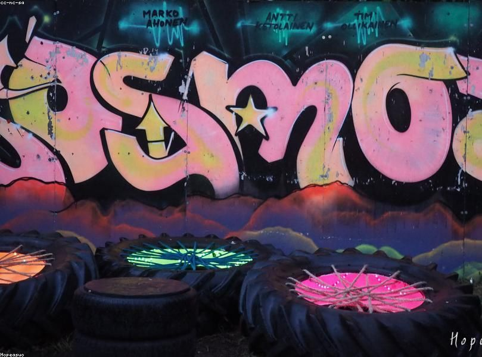
보라 내가 새 일을 행하리니 이제 나타낼 것이라 너희가 그것을 알지 못하겠느냐 반드시 내가 광야에 길을 사막에 강을 내리니 (이사야 43장 19절)
관찰 검은색 타이어들이 바닥에 놓여 있고 그 안쪽으로는 분홍색, 초록색, 주황색의 빛이 밝게 비치고 있습니다. 뒤편 벽면에는 분홍색과 노란색이 섞인 그래피티가 그려져 있으며, 그 위로 푸른빛의 이름들이 적혀 있습니다.
연결 어두운 타이어 속에서 환하게 솟아나는 빛처럼, 낡고 익숙한 일상 속에서도 새로운 길을 내시는 분의 손길을 떠올리게 됩니다. 때로는 멈춰 있는 듯한 시간 속에서도 보이지 않는 변화가 시작되고 있다는 사실이 우리에게 소망을 줍니다.
묵상 오늘 내가 머무는 일상의 자리에서 하나님이 새롭게 행하실 일을 기대하며, 주변 사람에게 따뜻한 격려의 말을 건네는 기도를 실천해 보세요.
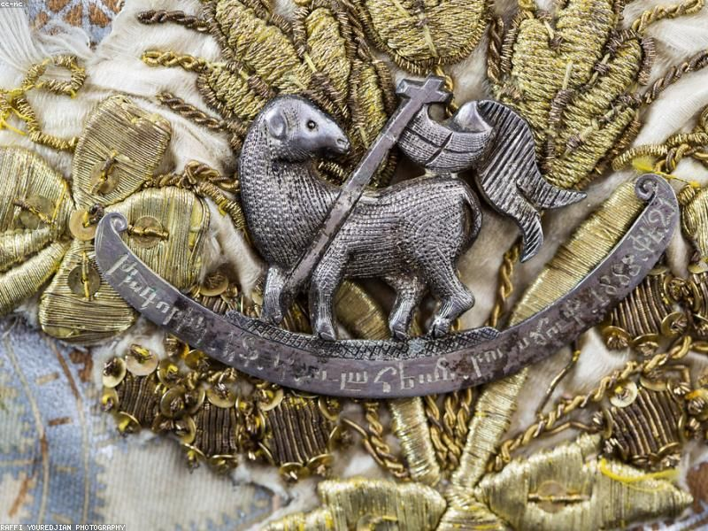
이튿날 요한이 예수께서 자기에게 나아오심을 보고 이르되 보라 세상 죄를 지고 가는 하나님의 어린 양이로다 (요한복음 1장 29절)
관찰 흰색 천 위에 금색 실과 금속 조각들이 정교하게 수놓아져 있고, 그 중앙에는 십자가 깃발을 든 어린 양 모양의 은색 금속 장식이 부착되어 있습니다. 금색 자수들은 빛을 받아 반짝이고, 은색 어린 양 장식은 주변의 화려한 배경 속에서 선명하게 드러나 있습니다.
연결 화려한 금빛 장식들 사이에서 묵묵히 자리를 지키는 어린 양의 모습은 세상의 복잡한 소음 속에서도 우리를 위해 길을 여시는 분의 존재를 떠올리게 합니다. 눈에 보이는 화려함보다 그 중심에 담긴 희생의 의미를 다시금 생각하게 됩니다.
묵상 오늘 하루 동안 내가 짊어지고 있는 고민이나 무거운 짐을 떠올리며, 그 모든 죄를 대신하신 그리스도의 은혜를 묵상하는 기도를 드려보세요.
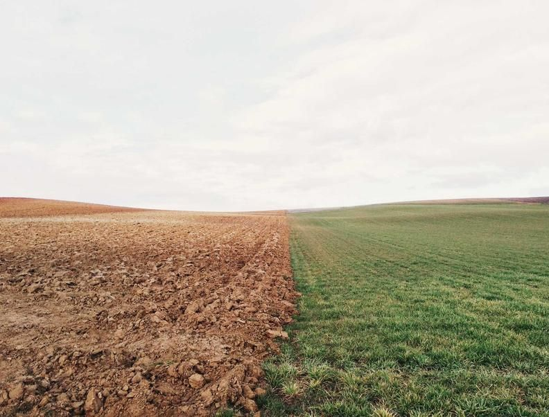
우리가 선을 행하되 낙심하지 말지니 포기하지 아니하면 때가 이르매 거두리라 (갈라디아서 6:9)
관찰 왼쪽에는 갈아엎은 갈색 흙이 드러나 있고 오른쪽에는 푸른 새싹이 돋아난 들판이 펼쳐져 있습니다. 구름 덮인 하늘 아래 두 구역이 직선으로 나뉘어 있으며, 흙덩이와 풀잎이 지면을 덮고 있습니다.
연결 무언가를 심고 기다리는 시간은 때로 막막하게 느껴지기도 합니다. 흙이 뒤집히고 새싹이 돋아나는 과정처럼, 우리가 묵묵히 뿌린 수고가 눈에 보이지 않는 순간에도 성실히 자라나고 있다는 사실을 기억하면 좋겠습니다.
묵상 오늘 내가 행한 작은 선행이나 수고를 떠올리며, 그 열매를 거두게 하실 은혜를 신뢰하는 기도를 드려보세요.
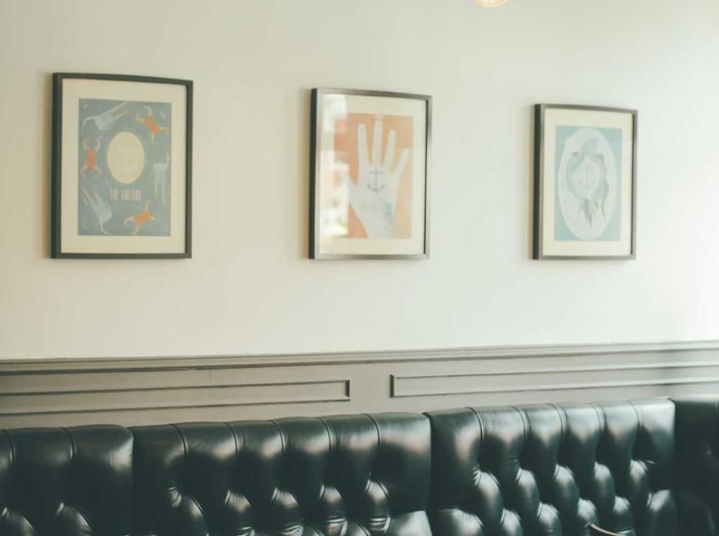
우리가 이 소망을 가지고 있는 것은 영혼의 닻 같아서 튼튼하고 견고하여 휘장 안에 들어 가나니 (히브리서 6:19)
관찰 흰 벽에 나란히 걸린 세 개의 액자 아래로 짙은 녹색 가죽 소파가 놓여 있습니다. 액자 속에는 닻 모양의 그림들이 담겨 있고, 실내 전체에 부드러운 밝은 빛이 고르게 퍼져 있습니다.
연결 벽에 걸린 닻 그림을 보면 흔들리는 삶 속에서도 변치 않는 중심을 잡고 싶다는 생각이 들곤 합니다. 거센 파도 같은 일상 속에서도 우리 영혼의 안전한 닻이 되어주는 존재가 있다는 사실이 든든하게 다가옵니다.
묵상 오늘 하루, 내 삶의 중심을 흔드는 상황이 찾아올 때마다 하나님을 향한 소망을 고백하는 짧은 기도를 드려보세요.
광풍을 고요하게 하사 물결도 잔잔하게 하시는도다 (시편 107:29)
관찰 서핑 보드를 든 사람이 젖은 모래사장 위에 서 있고, 멀리서 밀려오는 파도가 하얀 거품을 일으키며 해안가를 덮고 있습니다. 흑백 사진 속에서 하늘과 바다의 경계가 흐릿하며, 낮게 깔린 구름 아래로 빛이 반사되는 모래사장이 길게 이어져 있습니다.
연결 거친 파도 앞에 서서 바다를 응시하는 모습은 때로 삶의 큰 물결을 마주하는 우리와 닮았습니다. 거센 바람과 파도를 잠재우시는 그분의 다스림을 기억할 때, 우리는 다시금 평온을 찾을 수 있습니다.
묵상 오늘 하루 마주하는 고민이나 상황을 소리 내어 말하며 그분께 기도를 드리고, 그분이 내 삶의 폭풍을 다스리고 계심을 인정하는 시간을 가져보세요.
내가 산을 향하여 눈을 들리라 나의 도움이 어디서 올까 (시편 121편 1절)
관찰 검은색 유리로 덮인 높은 빌딩 두 채가 양옆으로 서 있고, 그 사이 좁은 틈으로 회색빛의 높은 타워가 솟아 있습니다. 건물 외벽에는 흐린 하늘과 주변의 모습이 반사되어 있으며, 타워의 꼭대기 부분은 하늘을 향해 곧게 뻗어 있습니다.
연결 복잡하고 높은 건물들 사이에 갇힌 듯한 풍경을 보면, 어디로 눈을 돌려야 할지 막막할 때가 있죠. 그럴 때 우리가 바라보아야 할 곳이 어디인지 알려주는 말씀이 이 사진과 참 잘 어울립니다.
묵상 오늘 하루 중 가장 막막한 순간이 찾아오면, 잠시 하던 일을 멈추고 고개를 들어 하늘을 바라보며 하나님께 현재의 상황을 짧게 아뢰는 기도를 드려보세요.
그러므로 너희는 하나님이 택하사 거룩하고 사랑 받는 자처럼 긍휼과 자비와 겸손과 온유와 오래 참음을 옷 입고 (골로새서 3:12)
관찰 검은색 금속 행거에 나무 옷걸이들이 일렬로 걸려 있고, 그 위로 주황색, 초록색, 회색 등 다양한 색상의 티셔츠들이 나란히 정돈되어 있습니다. 금속 행거의 표면에는 희미한 빛이 반사되고 있으며 옷걸이들은 일정한 간격을 유지하며 아래로 향해 있습니다.
연결 각기 다른 색깔의 옷들이 하나의 행거에 나란히 걸려 있는 모습은 마치 공동체 안에서 다양한 사람들이 어우러져 있는 풍경을 떠올리게 해요. 서로 다른 모습이지만 함께 조화를 이루며 살아가는 것이 우리에게 주어진 아름다운 부르심이라는 것을 생각하게 됩니다.
묵상 오늘 만나는 사람들에게 긍휼과 자비의 마음을 담은 따뜻한 말 한마디를 건네며 그리스도의 사랑을 실천하는 기도를 드려보세요.
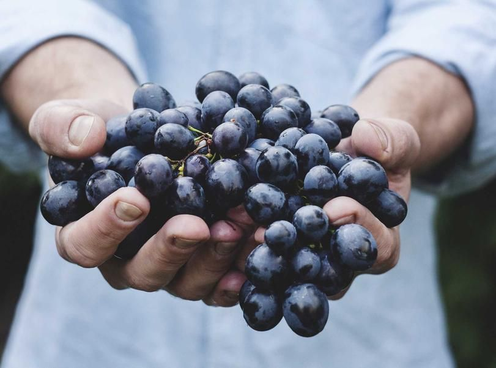
나는 포도나무요 너희는 가지라 그가 내 안에, 내가 그 안에 거하면 사람이 열매를 많이 맺나니 나를 떠나서는 너희가 아무 것도 할 수 없음이라 (요한복음 15:5)
관찰 두 손으로 짙은 보라색의 포도 송이를 가득 받쳐 들고 있습니다. 하얀 셔츠를 입은 사람의 양손은 포도 알갱이들을 감싸 쥐고 있으며, 포도 표면에는 작은 물방울들이 맺혀 있습니다.
연결 알알이 맺힌 포도 열매를 보면 누군가의 수고와 정성이 담긴 결실이 떠오르곤 합니다. 가지가 줄기에 붙어 있어야 열매를 맺을 수 있듯, 우리 삶의 모든 결과물도 결국 그분과 연결되어 있을 때 비로소 풍성해진다는 사실을 생각하게 됩니다.
묵상 오늘 내가 맺은 작은 성취나 일상의 결실을 떠올리며, 그 모든 과정이 은혜 안에서 이루어졌음을 고백하는 기도를 드려 보세요.
하늘이 하나님의 영광을 선포하고 궁창이 그의 손으로 하신 일을 나타내는도다 (시편 19편 1절)
관찰 수평선 너머로 붉게 물든 노을이 짙은 푸른 구름과 섞여 하늘을 덮고 있습니다. 고층 빌딩들이 밀집한 도심에는 노란 조명이 하나둘 켜지며 어두워지는 항구와 도로를 비추고 있습니다.
연결 하늘의 거대한 색채 변화와 도시의 불빛이 어우러진 풍경을 보면, 사람이 만든 화려한 도시보다 더 큰 질서와 웅장함이 존재함을 알게 됩니다. 온 세상에 가득한 빛과 어둠의 조화는 그분이 만드신 세계가 얼마나 정교한지 새삼 깨닫게 해 줍니다.
묵상 오늘 창밖의 하늘이나 주변의 자연을 잠시 바라보며, 그분이 지으신 세계를 찬양하는 짧은 기도를 드려보세요. 하나님이 만드신 이 아름다운 질서를 기억하며 오늘 하루의 일과를 그분께 맡기는 시간을 가져보면 좋겠습니다.
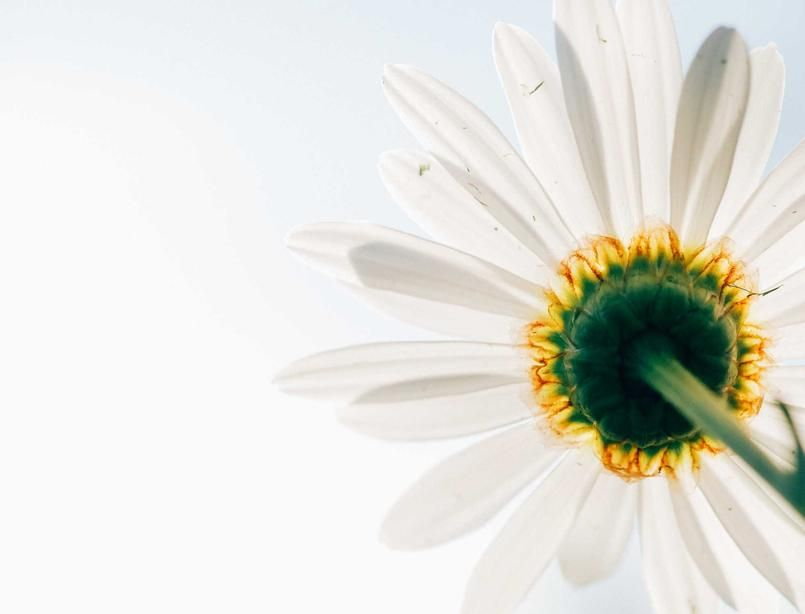
또 너희가 어찌 의복을 위하여 염려하느냐 들의 백합화가 어떻게 자라는가 생각하여 보라 수고도 아니하고 길쌈도 아니하느니라 (마태복음 6:28)
관찰 하얀 꽃잎을 가진 데이지 꽃 한 송이가 아래에서 위를 향해 비스듬히 놓여 있습니다. 꽃 중심부의 노란색과 녹색이 밝은 빛을 받아 선명하게 드러나며, 배경은 아무것도 없는 흰색으로 처리되어 있습니다.
연결 들판에 핀 작은 꽃 하나도 정성스레 입히시는 분의 손길을 떠올려 봅니다. 화려하지 않아도 그 자체로 충분히 아름다운 꽃의 모습은, 우리 존재가 이미 그분의 세심한 돌봄 아래 있음을 일깨워 줍니다.
묵상 오늘 길가에 핀 꽃이나 나무를 보며 그 생명을 지으신 하나님의 은혜를 떠올리고, 나를 향한 그분의 세심한 계획을 생각하며 감사의 기도를 드려 보세요.
주의 폭포 소리에 깊은 바다가 서로 부르며 주의 모든 파도와 물결이 나를 휩쓸었나이다 (시편 42:7)
관찰 수직으로 깎인 절벽에서 폭포수가 하얀 물줄기를 이루며 아래로 쏟아지고 있습니다. 주변은 짙은 녹색의 침엽수림으로 둘러싸여 있고, 산등성이 위로는 희뿌연 안개가 낮게 깔려 있습니다.
연결 거대한 물줄기가 쉼 없이 흐르는 풍경을 보면, 때로는 감당하기 어려운 삶의 무게가 밀려올 때가 있죠. 하지만 그 깊은 곳에서 울려 퍼지는 소리는 우리를 압도하는 것이 아니라, 오히려 우리를 지으신 분의 크신 은혜를 기억하게 합니다.
묵상 오늘 하루, 내 삶의 모든 상황을 주관하시는 하나님의 크심을 인정하며, 그분께 나의 모든 고민을 고백하는 기도를 드려보세요.
광야에서도 너희가 당하였거니와 사람이 자기의 아들을 안는 것 같이 너희의 하나님 여호와께서 너희가 걸어온 길에서 너희를 안으사 이 곳까지 이르게 하셨느니라 하나 (신명기 1:31)
관찰 체크무늬 셔츠를 입은 성인 남성이 아이를 한 팔로 안고 모래사장 위를 걷고 있습니다. 해변 옆으로 갈색 풀들이 자라나 있고, 하늘은 해 질 녘의 부드러운 주황빛과 푸른색이 섞여 있습니다.
연결 누군가를 업거나 안고 걷는 뒷모습은 사랑하는 대상을 향한 깊은 책임감과 애정을 보여줍니다. 우리를 품에 안고 험한 길을 함께 걸어오신 분의 마음이 이 풍경 속에 담겨 있습니다.
묵상 오늘 하루 나를 안아주신 하나님의 은혜를 기억하며, 나보다 연약한 이웃의 손을 잡거나 그를 위해 구체적인 중보 기도를 드려보세요.
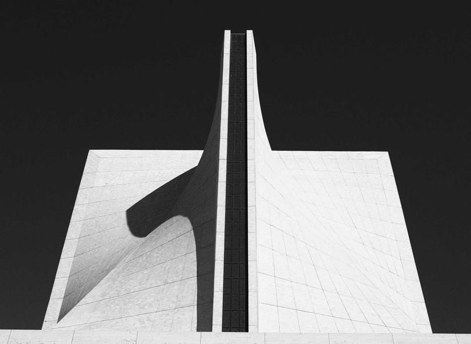
여호와는 나의 반석이시요 나의 요새시요 나를 건지시는 이시요 나의 하나님이시요 내가 그 안에 피할 나의 바위시요 나의 방패시요 나의 구원의 뿔이시요 나의 산성이시로다 (시편 18편 2절)
관찰 하늘을 향해 곧게 뻗은 건축물의 기둥과 그 옆으로 드리워진 짙은 그림자가 흑백의 대비를 이루고 있습니다. 격자무늬가 새겨진 흰색 외벽은 빛을 받아 밝게 드러나 있고, 중앙의 수직 구조물은 어두운 색으로 길게 뻗어 있습니다.
연결 견고한 바위처럼 흔들림 없이 서 있는 건물의 모습은 우리 삶의 기반이 어디에 있는지 생각하게 합니다. 세상의 복잡한 소음 속에서도 변하지 않는 단단한 토대를 의지할 때 비로소 진정한 안정감을 찾을 수 있습니다.
묵상 오늘 하루 동안 나를 보호하시는 하나님을 기억하며, 가장 신뢰하는 성경 구절을 한 번 소리 내어 읽고 그 은혜를 되새겨 보세요.
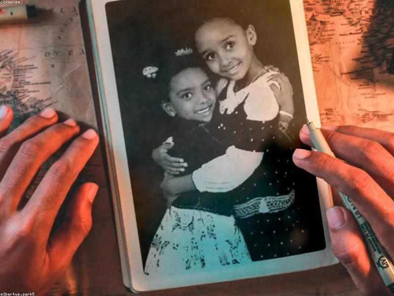
보라 형제가 연합하여 동거함이 어찌 그리 선하고 아름다운고 (시편 133편 1절)
관찰 낡은 지도 위에 놓인 사진 속에서 두 아이가 서로를 꼭 껴안고 있습니다. 사진을 비추는 따뜻한 주황빛 조명 아래, 누군가의 두 손이 사진을 잡고 펜을 든 채 그 순간을 가만히 바라보고 있습니다.
연결 서로를 의지하며 환하게 웃는 아이들의 모습은 형제가 연합하여 동거하는 아름다움을 떠올리게 합니다. 사진을 들여다보는 시간은 우리 곁에 있는 소중한 사람들과의 관계를 다시금 생각하게 해 줍니다.
묵상 오늘 연락이 뜸했던 형제나 지인에게 먼저 안부를 묻는 짧은 메시지를 보내며 하나님께서 주신 공동체의 은혜를 기억해 보세요.
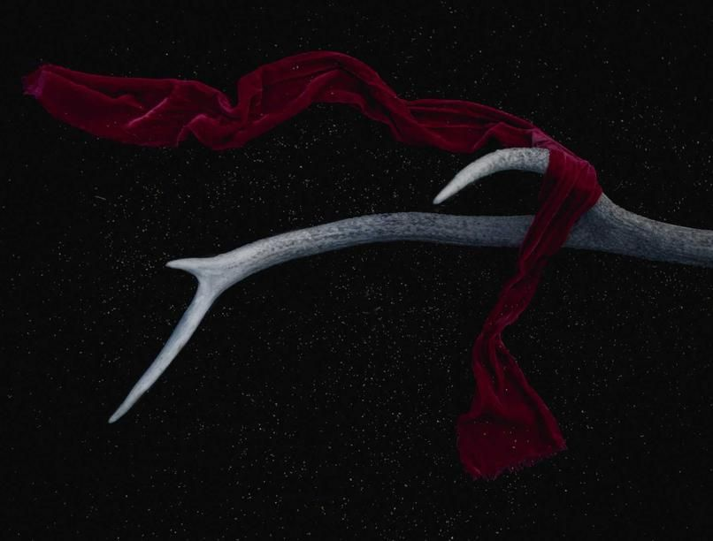
여호와께서 말씀하시되 오라 우리가 서로 변론하자 너희의 죄가 주홍 같을지라도 눈과 같이 희어질 것이요 진홍 같이 붉을지라도 양털 같이 희게 되리라 (이사야 1장 18절)
관찰 검은 배경 위에 회백색의 사슴 뿔이 가로로 놓여 있고, 그 위로 짙은 붉은색의 벨벳 천이 길게 감겨 있습니다. 어두운 공간 속에서 뿔의 표면과 천의 질감이 희미한 빛을 받아 드러나며 공중에 떠 있는 듯한 모습을 보입니다.
연결 어둠 속에서 더욱 선명하게 드러나는 붉은 빛을 보면, 깊은 흔적이나 지우고 싶은 실수조차 덮어주시는 강렬한 사랑이 떠오릅니다. 우리의 허물을 눈보다 희게 하시는 그 은혜가 칠흑 같은 밤에도 우리를 비추고 있습니다.
묵상 오늘 하루 동안 나의 잘못을 정직하게 고백하는 기도를 드리고, 그 죄를 씻어주시는 하나님의 은혜를 기억하며 주변 사람에게 따뜻한 말 한마디를 건네어 보세요.
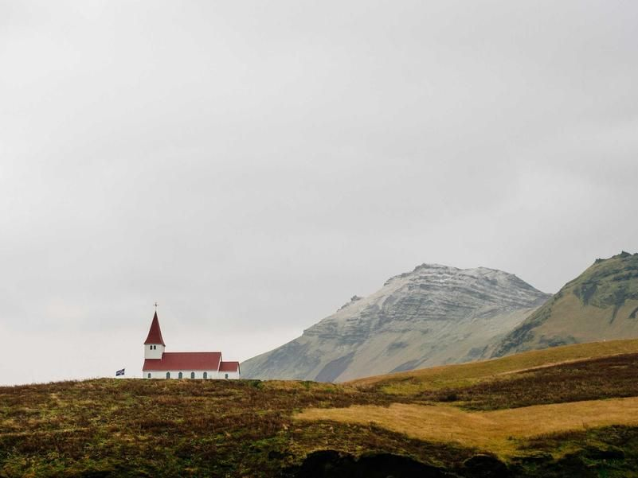
내가 산을 향하여 눈을 들리라 나의 도움이 어디서 올까 (시편 121편 1절)
관찰 붉은 지붕의 작은 교회가 갈색 들판 위에 서 있고, 그 뒤로 눈이 덮인 거대한 산이 구름 낀 하늘 아래 자리 잡고 있습니다. 흐린 날씨 속에서 산과 들판은 낮은 채도의 색감을 띠고 있으며, 건물은 지평선 끝에 홀로 놓여 있습니다.
연결 광활하고 낯선 풍경 속에서 작게 보이는 교회를 보면, 우리가 어디에 있든 시선을 들어 도움을 구할 곳이 있다는 사실이 떠오릅니다. 세상의 거대한 문제들보다 더 크신 분을 바라보는 일은 우리에게 큰 힘이 되어 줍니다.
묵상 오늘 하루 중 잠시 멈춰 서서, 현재 겪고 있는 상황보다 크신 하나님을 생각하며 그분께 감사의 기도를 드려 보세요.
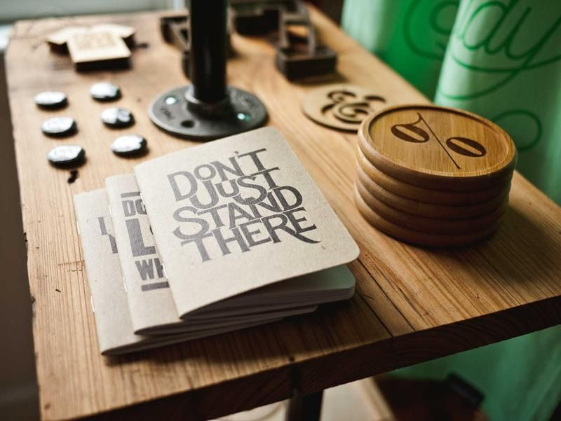
이와 같이 행함이 없는 믿음은 그 자체가 죽은 것이라 (야고보서 2:17)
관찰 나무 테이블 위에 'DON'T JUST STAND THERE'라는 문구가 적힌 노트들이 쌓여 있고, 그 옆으로 원형 나무 코스터와 검은색 금속 부품이 놓여 있습니다. 밝은 갈색 나무 질감이 드러나는 테이블 위로 부드러운 빛이 비치며 사물들의 그림자가 바닥에 드리워져 있습니다.
연결 가만히 서 있지 말라는 문구가 적힌 노트를 보면, 무언가 시작해야 할 것 같은 마음이 들곤 하죠. 생각에만 머물지 않고 발을 내딛는 것이 믿음의 본질이라는 사실이 이 문구와 참 잘 어울립니다.
묵상 오늘 내가 미뤄두었던 일 중 하나를 골라 작은 실천을 시작하며, 그 과정에서 하나님의 은혜를 구하는 기도를 드려보세요.
한 시내가 있어 나뉘어 흘러 하나님의 성 곧 지존하신 이의 성소를 기쁘게 하도다 (시편 46편 4절)
관찰 울창한 숲 사이로 좁은 계곡물이 흐르고 있으며, 주변 바위와 나무들은 짙은 녹색을 띠고 있습니다. 물살은 하얀 거품을 일으키며 아래쪽으로 빠르게 흘러가고, 나뭇가지 사이로 들어온 빛이 물 표면에 반사됩니다.
연결 쉼 없이 흐르는 물줄기를 보면 우리 삶도 때로는 거친 바위를 지나며 분주하게 흘러가는 것 같아요. 하지만 그 흐름 속에서도 우리를 적시고 생명을 공급하는 보이지 않는 물길이 있다는 사실이 참 다행스럽게 느껴집니다.
묵상 오늘 하루 중 잠시 시간을 내어, 나를 흐르게 하시는 하나님의 은혜가 어디서부터 시작되었는지 떠올리며 감사의 기도를 드려 보세요.
하늘이 하나님의 영광을 선포하고 궁창이 그의 손으로 하신 일을 나타내는도다 (시편 19편 1절)
관찰 붉은 벽돌로 지어진 교회 건물 뒤로 주황색과 보라색이 섞인 노을이 넓게 펼쳐져 있습니다. 건물 외벽에는 여러 개의 아치형 창문이 줄지어 있고, 앞쪽 도로에는 자동차와 가로등이 서 있습니다.
연결 하늘을 가득 채운 강렬한 색채의 노을을 보고 있으면, 사람이 만든 건축물보다 더 거대한 존재의 손길이 느껴지곤 하죠. 온 세상이 붉게 물드는 저녁 시간은 창조주의 솜씨를 다시금 실감하게 합니다.
묵상 오늘 저녁, 창밖으로 보이는 하늘을 잠시 바라보며 하나님께서 지으신 자연의 질서와 아름다움을 떠올리는 짧은 기도를 드려보세요.
무슨 이야기든 좋습니다, 비판적인 이야기. 다양한 시선, 모두 AI 학습의 훌륭한 재료가 됩니다.
감사합니다 🙏 (최대 1,000자)